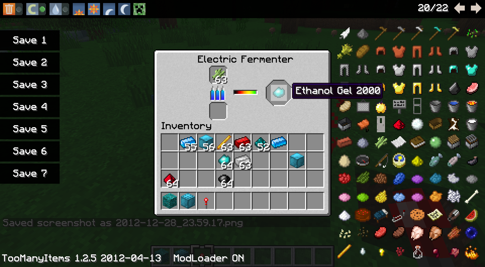

How It Started
Technically, I started modding and making game addon content at a young age in the early 2000s, having unpacked the assets for various games (many of which were stored in simple archive container formats) and editing them to manipulate the game's behavior. This was usually simple "data" edits - part stats for a racing game, for example - but several games allowed for more, including custom levels, scripts, and more. For example, I spent quite some time with an old racing/demolition derby game and editing the data files to create custom tracks and vehicle models (a practice that grew to significant popularity in the following years), spent several years making a plethora of custom cargos and map elements (and a custom expanded map) for several games in the "18 Wheels of Steel" trucking game series, and made a great many custom buildings and behavioral change mods for SimCity 4 in the late 2000s.One of the only surviving images of one of my old tracks for that game, and one of my old SC4 buildings.
My "modern" phase of modding started at the end of 2012, in the middle of my university program, and was effectively started by a series of lucky accidents, a story I never tire of retelling. At the time of these events, I had spent a little over a year playing vanilla Minecraft after having been introduced to the game in November 2011 (shortly after its beta 1.8.1 "Adventure Update"). For the months leading up to these events, I had until that winter break been running and playing on a vanilla server with a few other people. A few days into the Christmas break, one of these other people accidentally crashed the server with careless use of WorldEdit //fillr (recursive fill with blocks), and with the host many hours behind me (Pacific time), we were all facing hours of downtime. To alleviate the wait, another person shared with me a copy of Tekkit, one of the original heavily modded packs for the game. This was my first experience with that degree of change, and while several mods did not grab my interest at the time, a few - notably BuildCraft - did.
Introduction to Modded
I spent a few days playing around in creative test worlds with various pieces of tech mods, with a heavy focus on BuildCraft, at which point I decided to make a derivative of the pack and play a standard survival world, my first ever that was modded in that way.
In conjunction with this, I started to learn modding, ostensibly to add a way of renewably producing BC oil, which was normally worldgen-only and thus tedious to continually acquire. This required learning both Java and modding (as the quality of my code at the time will clearly demonstrate). My plans were to make a "Nikolite furnace" (to finally give a use to that RedPower material, which had seemed largely useless for years already), which could convert sugarcane to - ultimately - the oil, inspired in a large part by the (then fairly new) Periodic Videos entry on a similar process.

The furnace and its GUI.
These two activities occupied much of the winter break, and while I never ended up actually using my (half finished) "Ethanoil" mod, I had grown tired of constantly replacing cheap low-grade stone tools ingame and had settled on a new mod idea - bedrock (ie unbreakable) tools.
Fortuitous Roadblocks
Those who know my Minecraft mods already know where that idea is going, but first another pair of lucky accidents had to occur. Firstly, my original planned "Bedrock breaker" machine to harvest bedrock dust for the infinite tools, as well as its power source were to be modelled after the style of BuildCraft; I implemented the machine, and engine, and a wire. However, my complete lack of experience with Java or Minecraft modding at the time left me unable to realize that idea; nothing worked remotely right. With that, I ended up giving up, shelving the project, and going off to play KSP for a month.That set the stage for the second stroke of luck. As stated before, this occurred during my university program, and this particular month coincided with a class that involved - among many other things - discussions of geartrains. I was fortunate enough to have this spur an idea for the power system for my "abandoned" mod idea, and that evening went home and converted the engine to produce speed and torque, and implemented shafts and several ratios of gearboxes. Such was the birth of RotaryCraft, the mod that started all of what followed.